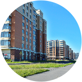
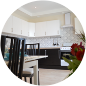
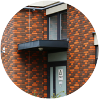
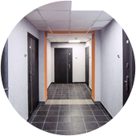

<div class="sect sect_1">
	<div class="sect_content">
		<div class="wrapper">
			<div class="row">
				<div class="col-8 off-4">
					<div class="sect_header">ЭТО <span class="b">ИДЕАЛЬНАЯ СРЕДА</span> <br>ДЛЯ ПОСТОЯННОГО ПРОЖИВАНИЯ</div>
					<div class="sect_desc">Квартал состоит из зданий, выполненных в единой классической архитектурной концепции. Он обладает индивидуальным архитектурным обликом и может считаться образцом элегантности и надежности. Небольшая высотность зданий, отсутствие студий и обособленность территории квартала дарят жильцам чувство приватности и  безопасности. </div>
				</div>
			</div>
					

			<div class="sect_block_list row">
				<div class="sect_block col-3">
					
					<div class="sect_block__title">НЕВЫСОТНАЯ КОМФОРТНАЯ <br>ЗАСТРОЙКА – 6-12 эт.</div>
					<div class="sect_block__desc"><a href="javascript:;" class="close"></a>Жилой квартал NEWПИТЕР формируют здания средней и малой этажности. Максимальная высота домов составляет 12 этажей, а большая их часть не превышает 6-9 этажей. Такая застройка психологически комфортна для жителей и дарит им одновременно ощущение простора и безопасности.</div>
				</div>

				<div class="sect_block col-3">
					
					<div class="sect_block__title">СТУДИЙ НЕТ</div>
					<div class="sect_block__desc"><a href="javascript:;" class="close"></a>Мы строим свои дома, прежде всего, для семей с детьми, предлагая им безопасную среду для проживания. Вы будете знать всех соседей в лицо, не будете беспокоиться о постоянно сменяющихся арендаторах студий – ведь в нашем комплексе их просто нет. </div>
				</div>

				<div class="sect_block col-3">
					
					<div class="sect_block__title">КИРПИЧНЫЕ СТЕНЫ – <br>ОТ 640 мм</div>
					<div class="sect_block__desc"><a href="javascript:;" class="close"></a>Отличительной чертой застройки жилого квартала NEWПИТЕР является надежность и неизменное качество кирпичного домостроения - мы строим дома с наружными кирпичными стенами толщиной от 640 мм. Именно благодаря использованию этого материала ваш дом будет теплым, уютным, экологически чистым и красивым.</div>
				</div>

				<div class="sect_block col-3">
					
					<div class="sect_block__title">ОТ 4 ДО 9 КВАРТИР <br>НА ЭТАЖЕ</div>
					<div class="sect_block__desc"><a href="javascript:;" class="close"></a>Небольшое количество квартир на этаже – это идеальная, дружелюбная среда для постоянного проживания вашей семьи. </div>
				</div>
			</div>
		</div>
	</div>
</div>